Professional Cameras
Broadcast and cinema camera bodies for theatre capture, teaching sessions and clinical documentation.
Hardware Products
Professional video and audio hardware for operating theatres, teaching venues and telemedicine — supplied, installed and supported alongside our software.
The range
From the camera in the theatre to the encoder that streams it, we supply the whole path — capture, switching, conversion, monitoring, routing and the cabling that joins it together.
Broadcast and cinema camera bodies for theatre capture, teaching sessions and clinical documentation.
Editing, colour grading and visual effects in a single application for post-producing surgical and training footage.
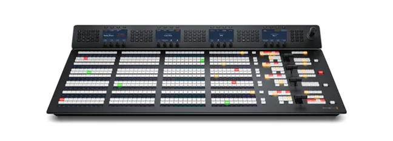
Multi-input live switching to mix theatre cameras, endoscopy feeds and graphics into one programme output.
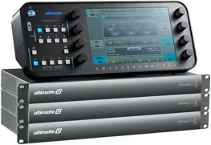
Real-time keying and compositing for clean chroma-key backgrounds in studio and lecture recordings.
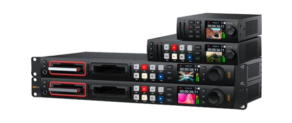
Disc publishing, recorders and storage for archiving procedures and issuing patient copies on DICOM media.
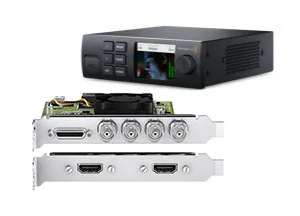
Capture cards and playback devices that bring SDI and HDMI sources into a workstation, and back out again.
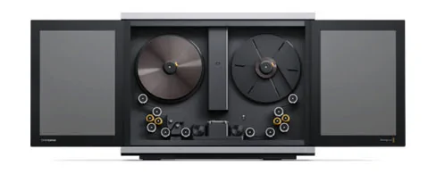
High-resolution film scanning to digitise archival 16mm and 35mm reels.
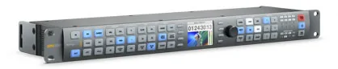
Frame-rate and format conversion between broadcast standards, so mismatched sources interoperate.
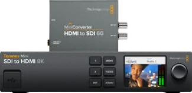
Compact SDI, HDMI, optical and analogue converters for connecting equipment that otherwise would not talk.
Reference monitors, scopes and audio metering to confirm signal integrity before it is recorded or streamed.
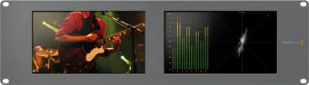
Signal generators and analysers for commissioning and fault-finding across an installed video plant.
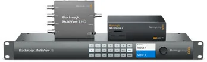
One display showing many live sources at once, so an operator can watch every feed in a theatre or control room.
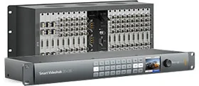
Matrix routers and distribution amplifiers to send any source to any destination across a facility.
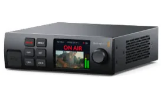
Hardware encoders that publish live feeds to teaching venues, telemedicine sessions and streaming platforms.
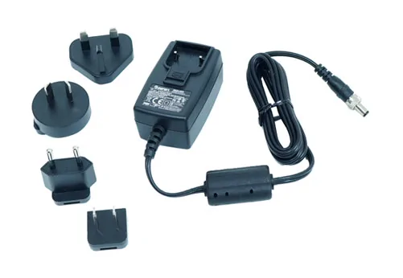
Racks, mounts, control panels, power supplies and spares that complete an installation.
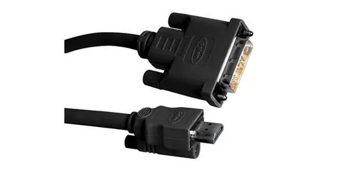
SDI, HDMI, optical fibre and audio cabling, plus the adapters that bridge connector types.
In the hospital
Live theatre feeds switched, keyed and distributed to lecture halls and conference rooms, so a procedure can be taught as it happens.
Explore the solutionEncoded, monitored video links that carry consultations and reads between sites without losing diagnostic clarity.
Explore the solutionSupplied with
Working closely with our partners, we share our expertise to provide quick and hassle-free resolutions to your IT problems.
Live production, capture, conversion and post — the backbone of the range above.
Photography and cinematography solutions for clinical and teaching capture.
Disc publishing and duplication, behind our DICOM media output.
Identification hardware, including patient ID wristband printing.
Tell us the rooms, the feeds and where they need to reach. We will scope the signal chain, supply the hardware and commission it.